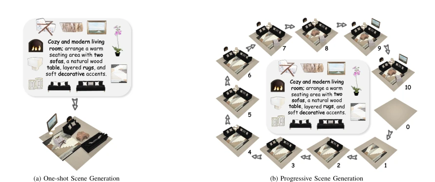
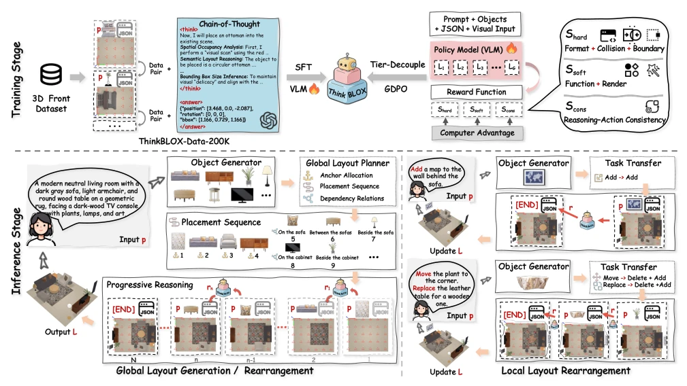
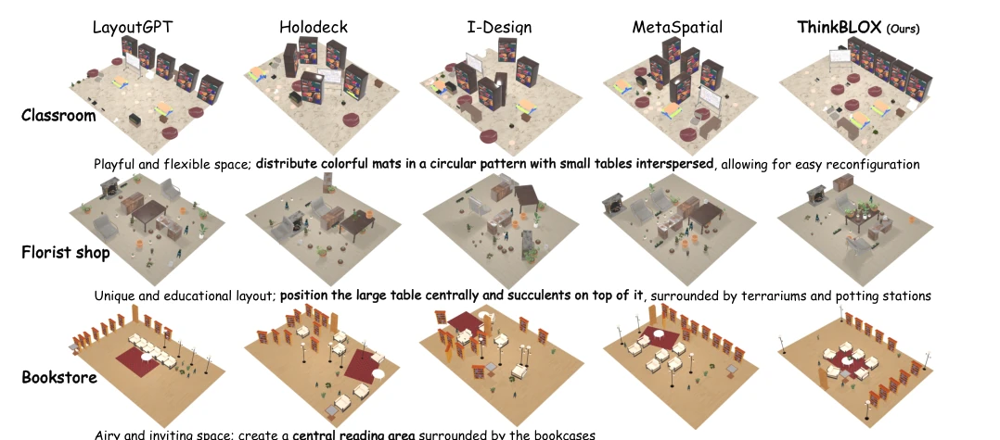
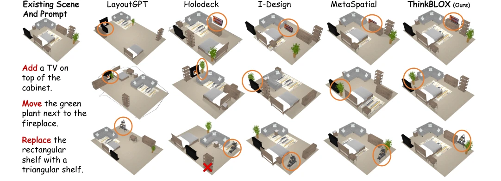
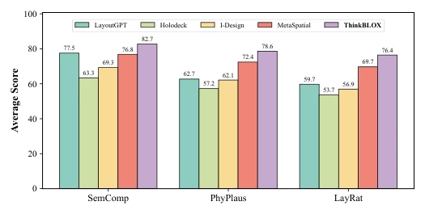
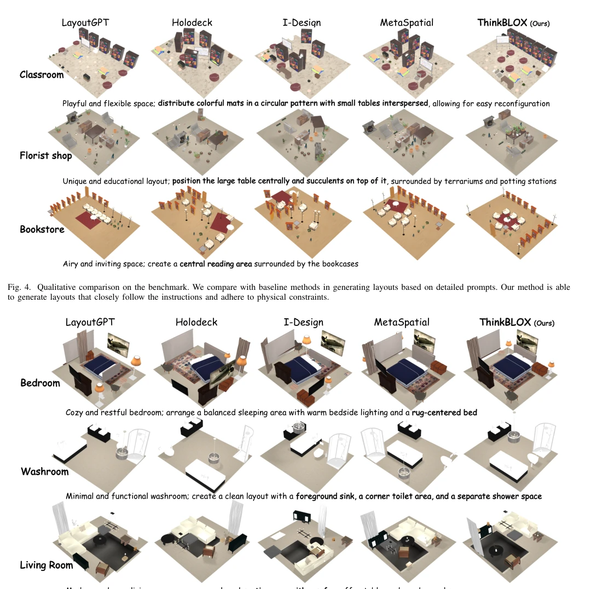
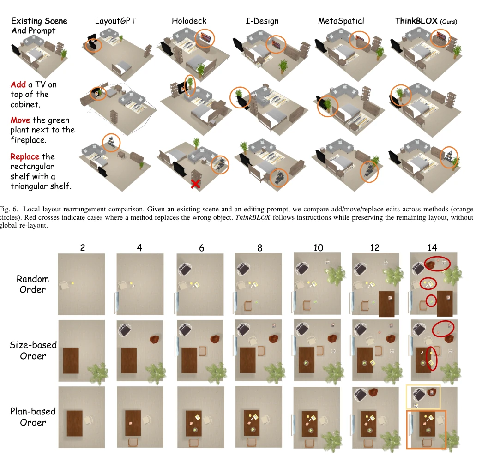
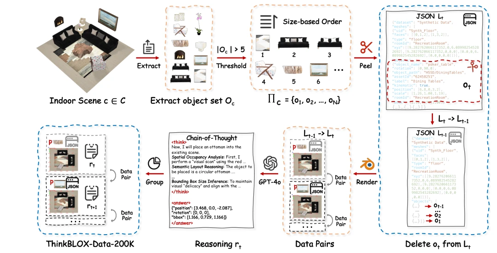
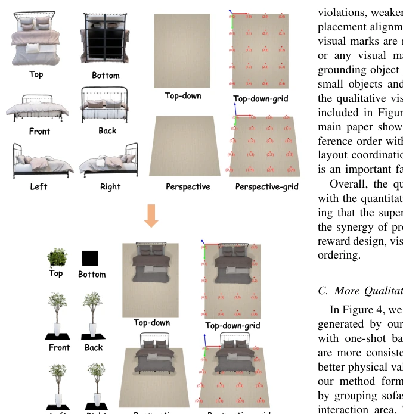

ThinkBLOX attempts to address the "one-shot" pain point of 3D scene generation using "multi-step thinking". Although it created a large dataset of 200,000 entries and implemented hierarchical reward RL optimization, sounding quite substantial, the inference speed is 3-5 times slower than one-shot generation. For embodied intelligence requiring real-time interaction, this latency is somewhat discouraging. However, it indeed outperforms a host of One-shot baselines in physical rationality and editing flexibility, especially since it does not rearrange the entire room during local editing, which is very practical. It proves that VLMs can perform more detailed spatial reasoning, but at the cost of computational overhead, belonging to a typical scheme of "trading time for quality".
Existing methods such as LayoutGPT [1], Holodeck [2] mostly adopt the One-shot paradigm, predicting all layouts at once. This means that during interactive editing, even moving a single object requires global re-optimization or reconstruction, which is extremely inefficient and prone to damaging the original structure. Although traditional graphics methods can generate step-by-step, they lack open-vocabulary semantic understanding capabilities. ThinkBLOX aims to fill this gap, treating scene synthesis as a state-conditioned step-by-step reasoning process, achieving true interactive controllable generation, solving the problem where semantic and physical constraints are difficult to balance.

Fig. 1. Overall comparison between one-shot and progressive generation. (a) One-shot synthesis directly generates all object placements at once, which limits editability and typically requires global re-optimization for updates. (b) ThinkBLOX follows a progressive process, placing objects sequentially to produce coherent intermediate layouts and better support interactive refinement.
The framework is based on Qwen2.5-VL, trained in two stages. First, SFT is performed using ThinkBLOX-Data-200K to let the model learn CoT reasoning. Then, Tier-Decoupled GDPO is introduced for RL fine-tuning to solve the multi-solution problem. The reward function is divided into three layers: physical validity (collisions, boundaries), semantic aesthetics (functional alignment, consistency), cognitive grounding (consistency between reasoning and action). During inference, the order of anchor objects is planned first, then CoT is generated step-by-step and parsed into 3D parameters. This hierarchical reward avoids goal conflicts, allowing the model to balance between physical constraints and semantic intentions, supporting global generation and local editing.

Fig. 2. Overview of ThinkBLOX framework. Training: We curate ThinkBLOX-Data-200K with multi-view context, CoT rationales, and JSON layouts, and train Qwen2.5-VL by SFT and Tier-Decoupled GDPO with tiered rewards (Shard, Ssoft, Scons). Inference: Given a text prompt p, ThinkBLOX plans the placement order and progressively generates or edits layout L through a CoT-guided reason-then-act process rn, supporting global generation/rearrangement and local rearrangement.Fig. 3. Construction Pipeline of ThinkBLOX-Data-200K. Starting from an indoor scene c ∈C, where C denotes the set of source scenes from IL3D, we first extract its object set Oc. Scenes with fewer than five objects are discarded. The remaining objects are then sorted by a size-based heuristic to obtain an ordered placement sequence Πc = {o1, o2, . . . , oN}, where ot denotes the t −th object to be placed. For each step t, we remove the target object ot from the full layout Lt to construct the previous partial layout Lt−1, render multimodal observations based on the pair (Lt−1, ot), and pair them with the textual prompt p describing the intended scene. GPT-4o is then used to generate the corresponding reasoning rt, including both chain-of-thought annotations and structured placement output.
The dataset originates from IL3D, with CoT annotations generated by GPT-4o. In benchmark tests across 11 room types, ThinkBLOX significantly outperforms baselines like LayoutGPT on the PSA metric. Ablation experiments prove that removing CoT or hierarchical reward leads to a significant drop in physical rationality. Human evaluation also shows it scores highest in semantic compliance and layout rationality. However, inference speed is indeed a shortcoming, and generalization ability to complex scenes still needs verification, currently only supporting indoor scenes.

Fig. 4. Qualitative comparison on the benchmark. We compare with baseline methods in generating layouts based on detailed prompts. Our method is able to generate layouts that closely follow the instructions and adhere to physical constraints.

Fig. 6. Local layout rearrangement comparison. Given an existing scene and an editing prompt, we compare add/move/replace edits across methods (orange circles). Red crosses indicate cases where a method replaces the wrong object. ThinkBLOX follows instructions while preserving the remaining layout, without global re-layout.

Fig. 8. Average human evaluation results across 12 room categories. ThinkBLOX achieves the highest average scores under all three metrics: semantic compliance (SemComp), physical plausibility (PhyPlaus), and layout rationality (LayRat).
其他图片Other Figures

Fig. 5. Qualitative comparison on ThinkBLOX-Data-200K. We report representative results on test dataset across diverse room types. Compared to baselines, ThinkBLOX better follows detailed prompts while maintaining physically plausible layouts.

Fig. 7. Effect of inference ordering. Plan-based ordering yields clearer functional zones and better organization (yellow/orange), while random and size-based orders lead to cluttered or incorrect placements (red).

Fig. 1. Construction Pipeline of ThinkBLOX-Data-200K. Starting from an indoor scene c ∈C, where C denotes the set of source scenes from IL3D, we first extract its object set Oc. Scenes with fewer than five objects are discarded. The remaining objects are then sorted by a size-based heuristic to obtain an ordered placement sequence Πc = {o1, o2, . . . , oN}, where ot denotes the t −th object to be placed. For each step t, we remove the target object ot from the full layout Lt to construct the previous partial layout Lt−1, render multimodal observations based on the pair (Lt−1, ot), and pair them with the textual prompt p describing the intended scene. GPT-4o is then used to generate the corresponding reasoning rt, including both chain-of-thought annotations and structured placement output.

Fig. 2. Representative visualizations of ThinkBLOX-Data-200K. In the final ThinkBLOX training pipeline, the visual input includes the front view and top view of the target object, together with the grid-marked current scene view. Each sample represents inserting one target object into a partially constructed room for progressive layout reasoning.